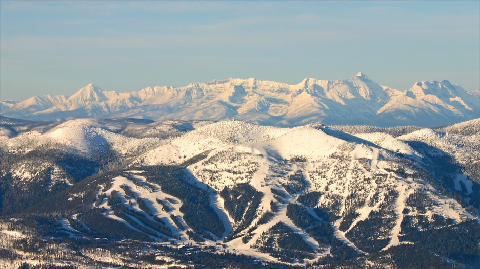

What is there to do in the cold Montana winter?
Whitefish Mountain Resort is a ski resort in the western United States, located at Big Mountain in northwestern Montana. It is west of Glacier National Park in the Flathead National Forest, four miles (6 km) from the town of Whitefish, sixteen miles (26 km) west of Columbia Falls, and 21 miles (34 km) north of Kalispell. The mountain is separated into three faces. The front side is primarily serviced by the Big Mountain Express high-speed quad and has the most skiable terrain. The backside of the mountain is serviced by the Big Creek Express, also a high-speed quad. The backside has more tree skiing terrain. The western aspect of the mountain contains the Hell Roaring basin. Serviced by Hellroaring (a triple chairlift), Hell Roaring basin is the most advanced skiing on the mountain with cliffs, vertical chutes, and tight tree skiing. The intermediate Hellfire trail is the longest on the mountain; it runs 3.3 miles (5.3 km) from the summit to the base of Chair 8.
Why Whitefish?
Whitefish is best known for its amazing tree skiing. You can find the best tree skiing on the west side of the mountain, at Hell Roaring Basin. Whitefish is also known to get a ton of snow, with an average of 330 inches per year. I love whitefish for the amount of different types of skiing avalible, and the pure size of the resort. Even on a busy day, there is enough room for everyone to find their own fresh snow.